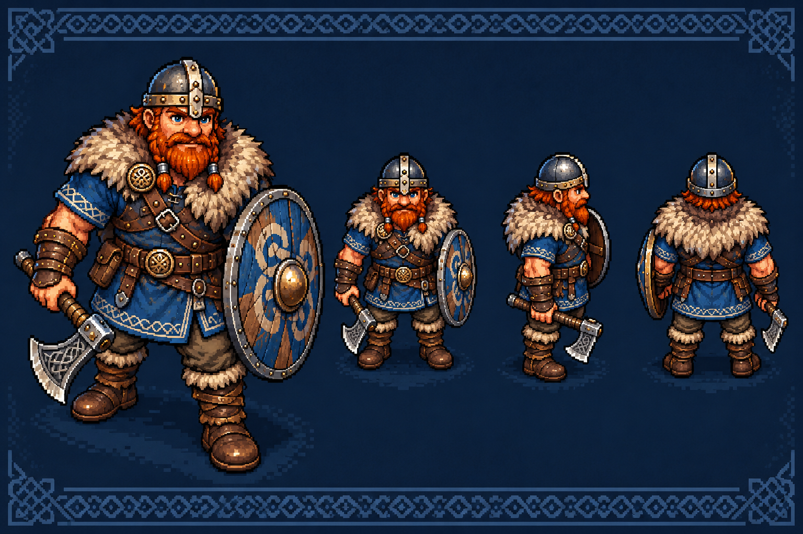

СЕВЕРНАЯ САГА · ПЕРВАЯ ВЕРСИЯЗа туманом фьорда
Три земли. Древние руны. Один путь домой.
Найди три руны на каждой карте, победи стража и открой северные врата. Костёр восстанавливает здоровье.
WASD / стрелки — идти · Пробел — топор · E — действие
Прогресс сохраняется в этом браузере у костров и врат.